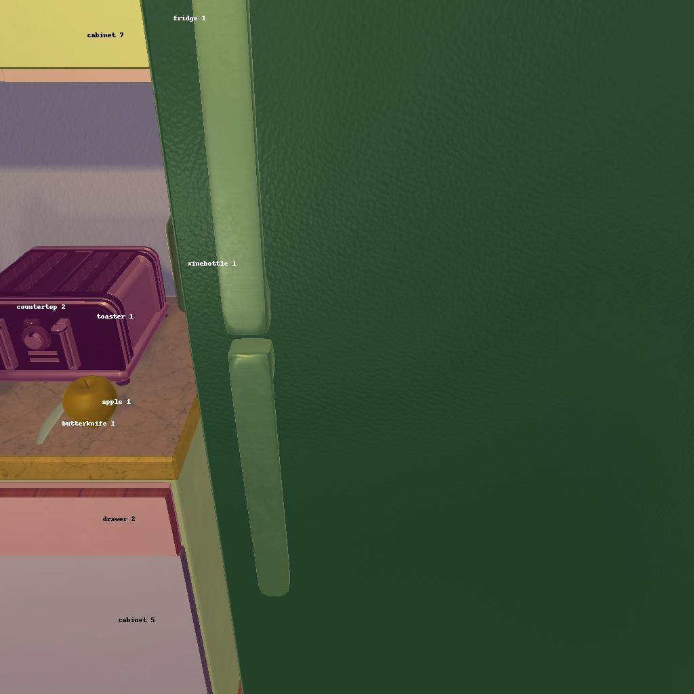
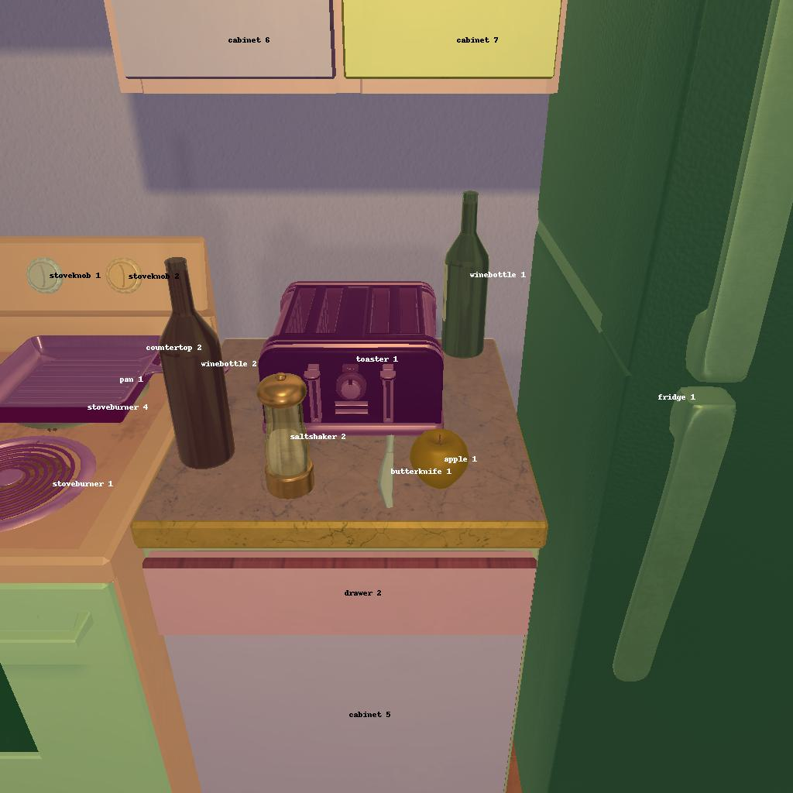

---------------------------------------------------------task: 14---------------------------------------------------------
--------------------------------------------------------------------------------------------------------------------------------------------------------------------
--------------------------------------------------------------------------------------------------------------------------------------------------------------------
Step:--------------------------------------------------------------------------14-------------------------------------------------------------------------------
----------------------------------------
VLM Prompt:
Image1:
Image2:
Image3:
**Instruction**
1. Analyze the provided image to identify all visible household objects, focusing on those relevant to the task description "put a cool apple in countertop."
2. Use the analysis of the image and the task hint "The agent must find an object of the desired type, pick it up, go to a fridge, cool the object with the fridge, then find the correct location to place it, and put it down there. The agent does not need to use the fridge button or open the fridge to cool the object, and the agent just needs to do action that is "cool the object with the fridge"." to answer the question: what is the most reasonable action in the choices for the task description "put a cool apple in countertop"?
4. Decide and write the answer using the template: The answer is: (i): , where i is the real number. If there is no desired object in the image, search every place based on **Initial Observation** to find the object. And if no one is exactly correct, choose a similar answer.
**Initial Observation**
You are in the middle of a room. Looking quickly around you, you can see microwave (1), countertop (1-2), cabinet (1-11), diningtable (1), drawer (1-3), sink (1), sinkbasin (1), toaster (1), stoveburner (1-4), fridge (1), coffeemachine (1), garbagecan (1)
**Answer Choices**
(1): go to microwave 1
(2): go to countertop 1
(3): go to cabinet 1
(4): go to diningtable 1
(5): go to drawer 1
(6): go to sink 1
(7): go to cabinet 2
(8): go to cabinet 3
(9): go to sinkbasin 1
(10): go to cabinet 4
(11): go to cabinet 5
(12): go to drawer 2
(13): go to toaster 1
(14): go to cabinet 6
(15): go to stoveburner 1
(16): go to cabinet 7
(17): go to stoveburner 2
(18): go to stoveburner 3
(19): go to stoveburner 4
(20): go to drawer 3
(21): go to cabinet 8
(22): go to cabinet 9
(23): go to cabinet 10
(24): go to coffeemachine 1
(25): go to cabinet 11
(26): go to garbagecan 1
(27): take pan 1 from countertop 2
(28): take winebottle 2 from countertop 2
(29): take winebottle 1 from countertop 2
(30): take saltshaker 2 from countertop 2
(31): take apple 1 from countertop 2
(32): take stoveknob 1 from countertop 2
(33): take stoveknob 2 from countertop 2
(34): take butterknife 1 from countertop 2
(35): examine countertop 2
**Answer**
Let's think step by step by following the instructions.
----------------------------------------
----------------------------------------
Original Response:
Firstly, we need to identify all visible household objects relevant to the task "put a cool apple in countertop." In the images provided, we can see an apple on the countertop 2, a fridge, and several other objects not relevant to cooling an apple.
Given the task hint, the agent must find an apple, pick it up, go to the fridge, cool the object with the fridge, then find the correct location (countertop) to place it, and put it down there. The agent does not need to use the fridge button or open the fridge to cool the object.
From the initial observation, the agent is in the middle of a room with various objects and locations mentioned, including the fridge and countertops.
Considering all the information and the answer choices provided, the most reasonable action sequence for the task would be:
1. Take apple 1 from countertop 2.
2. Go to fridge 1 to cool the apple.
3. Go to countertop 1 or 2 to place the cool apple down.
The answer choices related to these actions are (31): take apple 1 from countertop 2 and (2): go to countertop 1. However, since the task is to "put a cool apple in countertop," and we already see the apple on countertop 2, the agent does not need to move to countertop 1. Also, there is no "go to fridge 1" option, but cooling the apple is part of the task, not a specific action choice.
Therefore, the most reasonable action to begin the task is to take the apple that is already visible on the countertop 2. The answer is: (31): take apple 1 from countertop 2. After this, the agent would proceed to cool the apple with the fridge and then ensure it is on the countertop as required.
----------------------------------------
----------------------------------------
>>> Refine Original VLM Response and Get Pure Action: take apple 1 from countertop 2
----------------------------------------
-----------------------------------------------------------------
Running time: 24.776628255844116 seconds
Total Money: 8.80405
-----------------------------------------------------------------
-----------------------------------------------------------------
Text Observation:You pick up the apple 1 from the countertop 2.
-----------------------------------------------------------------
UNSUCCEED